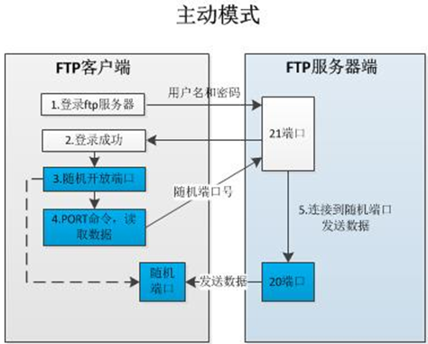

FTP：File Transfer Protocol（文件传输协议）的英文简称，而中文简称为“文件传输协议”。用于Ineternet上的控制文件的双向传输。同时，它也是一个应用程序（Application）。基于不同的操作系统有不同的FTP应用程序，而所有这些应用程序都遵守同一种协议传输文件。在FTP的使用当中，用户经常遇到两个概念：“下载”（Download）和“上传”（Upload）。
“下载”文件就是从远程主机拷贝文件至自己的计算机上。
“上传”文件就是将文件从自己计算机中拷贝至远程主机上。
支持FTP协议的服务器就是FTP服务器。
二、工作模式
FTP连接及传输模式
控制连接：TCP 21，用于发送FTP命令信息
数据连接：TCP 20，用于上传、下载数据
数据连接的建立类型：
主动模式：服务端从20端口主动向客户端发起连接
被动模式：服务端在指定范围内某个端口被动等待客户端连接


三、服务端和客户端程序
1）FTP用户的类型：
匿名用户：anonymous或ftp
本地用户：系统的账户（账户名称、密码等信息保存在passwd、shadow文件中）
2）常见的FTP服务器程序：
IIS、Serv-U、wu-ftpd、Proftpd、vsftpd（Very Secure FTP Daemon）
3）常见的FTP客户端程序：
CutelFTP、FlashFXP、LeapFTP、Filezilla、gftp、kuftp、FTP
四、相关配置
1）vsftpd软件包
官方站点：http://vsftpd.beasts.org/
主程序：/usr/sbin/vsftpd
服务名：vsftpd
用户控制列表文件：
/etc/vsftpd/ftpusers
/etc/vsftpd/user_list
主配置文件：
/etc/vsftpd/vsftpd.conf
2）匿名权限控制：
anonymous_enable=YES：启用匿名访问
anon_umask=022：匿名用户所上传文件的权限掩码
anon_root=/var/ftp：匿名用户的FTP根目录
anon_upload_enable=YES：允许上传文件
anon_mkdir_write_enable=YES：允许创建目录
anon_other_write_enable=YES：开放其他写入权
anon_max_rate=0：限制最大传输速率（字节/秒）
3）本地用户权限控制：
local_enable=YES：是否启用本地系统用户
local_umask=022：本地用户所上传文件的权限掩码
local_root=/var/ftp：设置本地用户的FTP根目录
chroot_local_user=YES：是否将用户禁锢在主目录
local_max_rate=0：限制最大传输速率（字节/秒）
4）常用的全局配置项：
listen_address=192.168.4.1：设置监听的IP地址
listen_port=21：设置监听FTP服务的端口号
write_enable=YES：是否启用写入权限
download_enable=YES：是否允许下载文件
max_clients=0：限制并发客户端连接数
max_per_ip=0：限制同一IP地址的并发连接数
pasv_min_port=50000
pasv_max_port=60000：将客户端的数据连接端口改在（50000-60000之间）
5）访问限制：
userlist_enable=YES：是否启用/etc/vsftpd/user_list列表文件
userlist_deny=YES：禁用/etc/vsftpd/user_list中的用户
userlist_deny=NO：非/etc/vsftpd/user_list中的用户禁用
6）其他安全项：
connect_timeout=60
accept_timeout=60
data_connection_timeout=300
idle_session_timeout=300
ftpd_banner=xxx和banner_file=/path/file
tcp_wrappers=YES
7）匿名和本地验证
设置全局配置
[root@localhost ~]# vi /etc/vsftpd/vsftpd.conf
listen_address=192.168.216.234 #设置监听的IP地址
listen_port=21 #设置监听FTP服务的端口号
write_enable=YES #是否启用写入权限
download_enable=YES #是否允许下载文件
max_clients=0 #限制并发客户端连接数
max_per_ip=0 #限制同一IP地址的并发连接数
a、匿名用户
准备匿名FTP访问的目录/var/ftp/pub，使匿名用户FTP对该目录有写入权限：chown ftp /var/ftp/pub
开放匿名用户配置，并启动vsftpd服务
[root@localhost ~]# vi /etc/vsftpd/vsftpd.conf
anonymous_enable=YES #启用匿名用户
write_enable=YES #所有用户中可以写入文件
anon_umask=022 #匿名用户上传文件的权限的默认掩码
anon_upload_enable=YES #匿名用户可以上传文件
anon_mkdir_write_enable=YES #匿名用户可以在服务器端创建目录
anon_other_write_enable=YES #开放其他写入权（比如删除目录）
anon_root=/var/ftp #匿名用户的FTP根目录
[root@localhost ~]# service vsftpd start #启用vsftpd服务
为vsftpd启动vsftpd： [确定]
使用ftp客户端程序访问测试：
[root@localhost ~]# ftp 192.168.216.234
Connected to 192.168.216.234 (192.168.216.234).
220 (vsFTPd 2.2.2)
Name (192.168.216.234:root): ftp #输入匿名用户
331 Please specify the password.
Password: #匿名用户登陆无需密码
230 Login successful. #见到这一行才算登陆成功
Remote system type is UNIX.
Using binary mode to transfer files.
ftp>
Connected to 192.168.216.234 (192.168.216.234).
220 (vsFTPd 2.2.2)
Name (192.168.216.234:root): ftp #输入匿名用户
331 Please specify the password.
Password: #匿名用户登陆无需密码
230 Login successful. #见到这一行才算登陆成功
Remote system type is UNIX.
Using binary mode to transfer files.
ftp>
b、本地用户
[root@localhost ~]# vi /etc/vsftpd/vsftpd.conf
local_enable=YES #启用本地用户
write_enable=YES #所有用户可以写入
local_umask=022 #本地用户所上传文件的权限掩码
local_root=/var/ftp #设置本地用户的FTP根目录
chroot_local_user=YES #是否将用户禁锢在主目录
c、允许用FTP服务器的被动模式
[root@localhost ~]# vi /etc/vsftpd/vsftpd.conf
pasv_enable=YES #开启被动模式
pasv_min_port=24500 #设置客户端数据接口范围
pasv_max_port=24600 #设置客户端数据接口范围
d、虚拟用户
启动服务并测试
步骤如下：
创建账号数据
1.建立虚拟FTP用户的账号数据库文件
[root@localhost ~]# vi /etc/vsftpd/vusers.list
zhangsan
123456
lisi
123456
wangwu
123456
[root@localhost ~]# cd /etc/vsftpd/
[root@localhost vsftpd]# db_load -T -t hash -f vusers.list vusers.db
[root@localhost vsftpd]# chmod 600 /etc/vsftpd/vusers.*
2.创建FTP根目录及虚拟用户映射的系统用户
[root@localhost ~]# useradd -d /var/ftproot -s /sbin/nologin virtual
[root@localhost ~]# chmod 755 /var/ftproot/
3.建立支持虚拟用户的PAM认证文件
[root@localhost ~]# vi /etc/pam.d/vsftpd.vu #创建虚拟用户认证文件
#%PAM-1.0
auth required pam_userdb.so db=/etc/vsftpd/vusers
account required pam_userdb.so db=/etc/vsftpd/vusers
4.在vsftpd.conf文件中添加支持配置
[root@localhost ~]# vi /etc/vsftpd/vsftpd.conf
write_enable=YES
guest_enable=YES #启用虚拟用户
guest_username=virtual #虚拟用户映射的本地用户
pam_service_name=vsftpd.vu #虚拟用户认证文件
5.为个别虚拟用户建立独立的配置文件
在vsftpd.conf文件中添加用户配置目录支持
user_config_dir=/etc/vsftpd/vusers_dir
为用户zhangsan、lisi建立独立的配置目录及文件（配置文件名与用户名相同）
[root@localhost ~]# mkdir /etc/vsftpd/vusers_dir/
[root@localhost ~]# cd /etc/vsftpd/vusers_dir/
[root@localhost vusers_dir]# vi zhangsan
anon_upload_enable=YES
anon_mkdir_write_enable=YES
[root@localhost vusers_dir]# touch lisi
[root@localhost ~]# service vsftpd reload #重新载入配置文件
注意：虚拟用户建立独立的配置文件与vsftpd.conf中原有配置是叠加效果，虚拟用户生效本地用户将不能登录